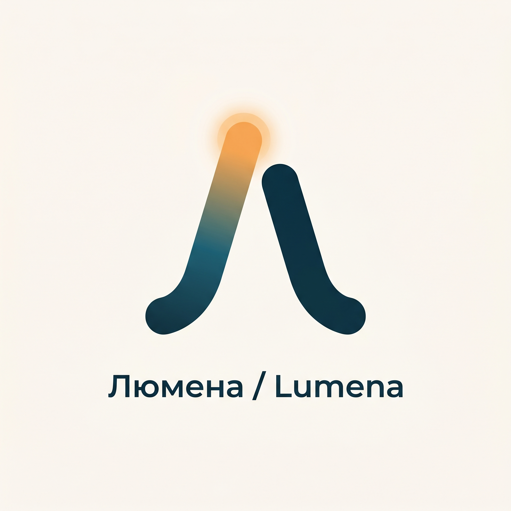
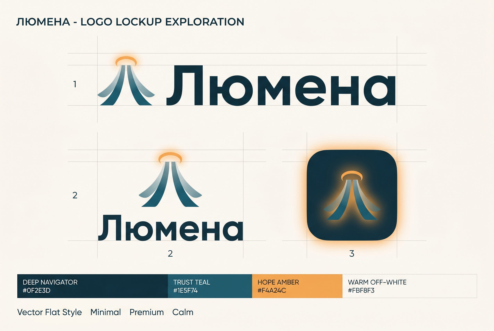

09 · Смысл
03 · Знак

Логотип
Логотип строится на центральном коде бренда — СВЕТЕ как «свете надежды, ясности и проводничества». Знак называется «Луч-Лю» (Lumen Mark): это кириллическая буква «Л», построенная как мягкий источник света — две восходящие линии, расходящиеся вверх от единой нижней точки-опоры, словно лучи рассвета или раскрывающийся свет лампы. Точка схождения внизу — это «человек/координатор», от которого исходит свет; расхождение вверх — это надежда и открывающийся путь. В вершине левого штриха помещён мягкий световой кружок-гало (источник), дающий тёплое янтарное свечение, переходящее в навигационный сине-зелёный к основанию — буквально визуализируя переход «из темноты неизвестности к свету ясности», главную стратегическую задачу бренда. На латинице тот же приём читается как «L», поэтому знак работает в обеих письменностях (Люмена / Lumena). Это НЕ медицинский крест, НЕ самолёт, НЕ глобус, НЕ капля — никаких клишированных медтуристических символов. Это мягкий, ведущий свет («свет в окне», а не прожектор), точно отражающий архетип Заботливого + Мудреца-Проводника.
Основной знак (Lumen Mark)Буква «Л/L» как источник света с янтарным гало. Версия для светлого фона.

Вариант знакаАльтернативное построение лучей — для иконки и компактных носителей.

Локапы и блокировкиГоризонтальный, вертикальный и app-icon с палитрой бренда.
Моно, инверсия, фольгаОдноцветная, выворотка на тёмном и премиальная золотая версии.
Построение
СЕТКА И ПОСТРОЕНИЕ: знак вписан в квадрат 1000×1000 ед. Буква «Л» построена из двух штрихов толщиной 132 ед. с мягко скруглёнными концами (round cap, радиус = половина толщины) — мягкость = тепло, не стерильность. Угол расхождения штрихов 28–32°, что даёт устойчивый, спокойный «домик»-силуэт (ассоциация с кровом, защитой — Caregiver). Нижние концы штрихов стоят на единой оптической базовой линии. Гало: окружность диаметром 150 ед. в вершине левого штриха, выполняется либо как заливка тёплым янтарём #F4A24C, либо как мягкое радиальное свечение (для цифровых сред с эффектами). Внутри основного знака левый штрих несёт вертикальный градиент сверху-вниз: #F4A24C (тёплый свет/надежда) → #1E5F74 (доверие/база); правый штрих — сплошной #133B4E (Глубокий навигационный) для устойчивости. ЛОГОТИП (wordmark): «Люмена» набирается шрифтом Onest SemiBold с увеличенным трекингом +1.5%, оптически выровненным по высоте знака; межбуквенный ритм спокойный, без сжатия. ВАРИАНТЫ: (1) Основной горизонтальный — знак слева + «Люмена» справа, оптический зазор между ними = ширине одного штрихового модуля. (2) Вертикальный — знак сверху по центру, слово под ним (для аватаров, мобильных шапок, печатей). (3) Только знак (app icon, фавикон, водяной знак, тиснение). (4) Латиница «Lumena» — тот же знак как «L». ЦВЕТОВЫЕ ВЕРСИИ: полноцветная (градиент+гало), одноцветная навигационная #133B4E (для документов, договоров — комплаенс-материалы выглядят строго и честно), инверсная белая (на тёмно-сине-зелёном фоне), монохром-янтарь только для декоративных тиснений/фольги в премиум-печати.
Охранное поле и недопустимое
ОХРАННОЕ ПОЛЕ: минимальный отступ вокруг логотипа = высоте гало-кружка (150 ед. в системе знака) со всех сторон; в этом поле не размещается никакой текст, графика или край макета. МИНИМАЛЬНЫЕ РАЗМЕРЫ: знак — не менее 24 px (фавикон 32/48/64 px рисуются отдельно с упрощённым гало без градиента); горизонтальный логотип — не уже 120 px по ширине в цифре и 24 мм в печати. MISUSE (запрещено): не растягивать/сжимать по одной оси; не вращать знак (свет всегда восходит вверх); не менять угол расхождения штрихов; не добавлять обводку, тени-дропшэдоу, неон, скос, 3D-extrude; не заливать знак фотографией; не размещать на пёстром/контрастном фоне без щита-подложки; не использовать чистый медицинский голубой/бирюзовый или ярко-красный; не превращать гало в «солнце с лучами» или в медкрест; не набирать слово «Люмена» другим шрифтом или капслоком в логотипе; не разрывать связку знак+слово непропорционально. На фото логотип ставится только в зоне спокойного, неконтрастного участка (небо, стена, размытие) либо на полупрозрачной тёплой подложке.